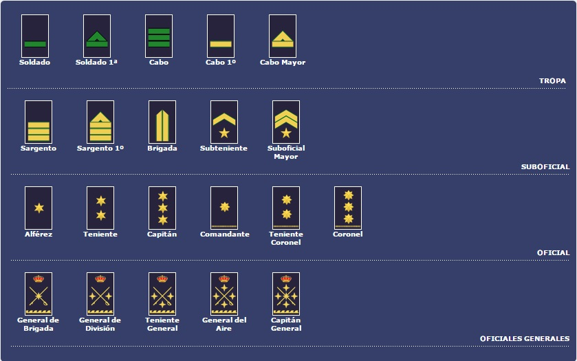

Aqui veremos los rangos por los que se compone el ejercito del aire
Las fuerzas armadas regulares, así como las instituciones gubernamentales o ciudadanas que se rigen por la disciplina castrense, ordinariamente siguen un escalafón con el que se recompensan los méritos a sus miembros, además de asignarles diferentes responsabilidades en función de su posición dentro de dicho escalafón.
En la civilización occidental contemporánea, principalmente en el ámbito hispanohablante, dicho escalafón consiste básicamente (según la nomenclatura más común para las fuerzas terrestres de infantería, seguida por la mayoría de instituciones militarizadas regulares) en:
Escuela de reclutas (entendiendo «escuela» a la vez como modo de instrucción y como colectividad de individuos homólogos), a la que pertenecen los candidatos a ingresar, lo que conseguirán según los méritos ganados durante su adiestramiento inicial. Mientras tanto, su actuación se evalúa en los límites del fuero civil.
Escuela de cadetes o «cadetería», que agrupa a quienes han sido aceptados en la institución, que adquieren los derechos y las obligaciones que corresponden a su propio fuero.
Escuela de clases a la que pertenecen quienes tienen personal a su mando, comúnmente para proporcionarle instrucción, y tienen algún grado menor (cabo o sargento).
Escuela de oficiales, para quienes, además del mando directo sobre clases y cadetes, desempeñan labores administrativas (teniente y capitán, llamados «oficiales» fuera de las fuerzas regulares).
Estado Mayor, que agrupa al personal administrativo con grado (sobre todo de la oficialidad) directamente bajo las órdenes del comandante en jefe.
Comandancia, para quienes tienen responsabilidad y mando («comandante») sobre el personal de un destacamento, un batallón o una región geográfica específica.
Jefatura, ocupada por las máximas autoridades de la institución (comandantes o mayores, coroneles y generales).
Comandante supremo o jefe supremo. En las fuerzas regulares, y en bastantes institutos civiles de disciplina militar, se reconoce al monarca, al presidente o al primer ministro de la nación como su «jefe máximo» o «mando supremo».
El escalafón no es homogéneo entre los ejércitos de los distintos países ni entre los militares de tierra, mar y aire. Asimismo, existen diversas nomenclaturas según su campo de acción.